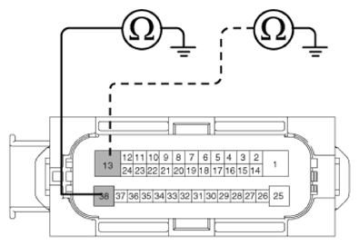

LEMON Manuals
: Even more car manuals for everyone: 1960-2025
Home
>>
Hyundai
>>
2022
>>
Elantra N Line, Standard Trans
>>
Repair and Diagnosis (Single Page)
>>
Brakes
>>
Traction Control
>>
Electronic Stability Control (ESC) System (Except HEV)
>>
Troubleshooting
>>
ABS Does Not Operate
>>
Inspection procedures
>>
Check the ground circuit
Check the ground circuit
Disconnect the connector from the ESP control module.
Check for continuity between terminals 13, 38 of the ESP control module harness side connector and ground point. Is there continuity?
YES
Check the wheel speed sensor circuit.
NO
Repair an open in the wire and ground point.

Courtesy of HYUNDAI MOTOR AMERICA